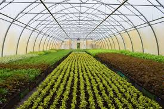

Agricultural Innovation in Action
Explore our work through images showcasing modern farming techniques and technologies.





Modern Farming Techniques
Watch how technology is transforming agriculture for better efficiency and sustainability.